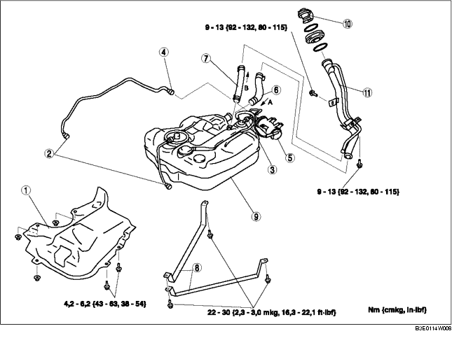

- Achtung
- • Die Kraftstoffpumpe funktioniert eventuell nicht, wenn kein Kraftstoff im Tank ist (Leerlauf). Die abgepumpte Kraftstoffmenge genau überwachen und sofort die Pumpe anhalten, wenn kein Kraftstoff mehr gefördert wird.
1. Das Fahrzeug auf einer ebenen, waagrechten Fläche abstellen.
2. Vor der Durchführung von Arbeiten und um das Auslaufen von Kraftstoff vermeiden, die 'VORSICHTSHINWEISE VOR AUSFÜHRUNG DER WARTUNGSARBEITEN' beachten. (Siehe VORSICHTSHINWEISE VOR AUSFÜHRUNG DER WARTUNGSARBEITEN [ZJ, Z6, LF].)
3. Den Kraftstoff auf nachfolgend beschriebene Weise aus dem Kraftstofftank ablassen:
4. Die Rücksitzpolster ausbauen. (Siehe RÜCKSITZ AUSBAUEN/EINBAUEN.)
5. Den Deckel der Serviceöffnung abnehmen.
6. Den Steckverbinder der Kraftstoffpumpe abziehen.
7. Die Schutzabdeckung des Aktivkohlebehälters entfernen. (Siehe AKTIVKOHLEBEHÄLTER AUSBAUEN/EINBAUEN [ZJ, Z6, LF].)
8. Den Hauptschaldämpfer herunter lassen, damit das Hitzeschild enfernt werden kann. (Siehe AUSPUFFANLAGE AUSBAUEN/EINBAUEN [ZJ, Z6].) (Siehe AUSPUFFANLAGE AUSBAUEN/EINBAUEN [LF].)
9. Die hintere, untere Motorabdeckung (links) entfernen.
10. Gemäß der Reihenfolge in der Tabelle ausbauen.
11. Der Einbau erfolgt in umgekehrter Reihenfolge.
12. Alle Teile unter Beachtung der "VORSICHTSHINWEISE NACH AUSFÜHRUNG DER WARTUNGSARBEITEN" prüfen. (Siehe VORSICHTSHINWEISE NACH AUSFÜHRUNG DER WARTUNGSARBEITEN [ZJ, Z6, LF].)

.
1. Das hintere Rad (rechts) abmontieren.
2. Den hinteren Spritzschutz (rechts) abmontieren.
3. Den hinteren Fahrschemel mit einem Getriebeheber abstützen.
4. Die hinteren, unteren Stoßdämpferschrauben (rechts) herausdrehen. (Siehe HINTERRAD-STOSSDÄMPFER AUSBAUEN/EINBAUEN)
5. Die Befestigungsmuttern des Hinterachsfahrschemels (6 Stück) lösen und den Hinterachsfahrschemel 30 mm {1,2 in} absenken. (Siehe HINTEREN FAHRSCHEMEL AUSBAUEN/EINBAUEN.)
6. Das Kraftstoff-Einfüllrohr ausbauen.
1. Verbindungsschlauch und Schlauchklemme wie in der Abbildung gezeigt anbringen.
1. Den Be- und Entlüftungsschlauch und Schlauchklemme wie in der Abbildung gezeigt anbringen.